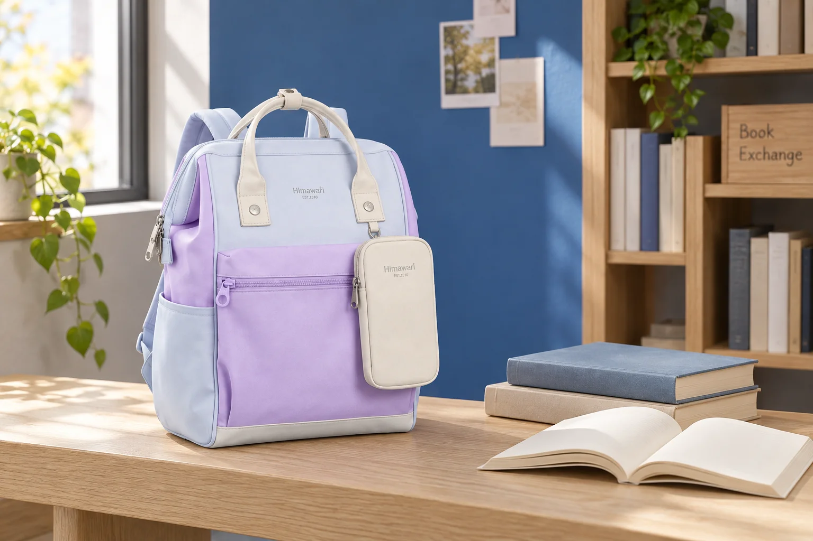
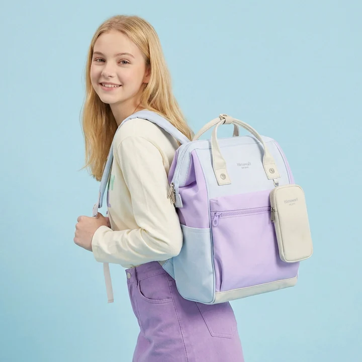

책을 건네고 빈 백팩으로 돌아오는 날

책 몇 권을 건네러 나갈 때에는 출발의 가방이 단단하게 채워져 있습니다. 약속을 마친 뒤에는 그 책들이 빠지고 작은 소지품만 남습니다. 집에 돌아갈 준비가 끝났다고 생각하기 쉬운 순간이지만 백팩 안에서는 큰 면이 비어 있습니다. 무거운 짐이 줄어드는 것과 남은 물건이 사용하기 좋은 자리에 놓이는 것은 다른 변화입니다. 가방을 닫기 전에 책이 있던 빈자리를 한 번 살펴봅니다.
이 외출은 새로운 물건을 받아올 계획과도 구별할 수 있습니다. 가져갈 책의 부피가 크고 돌아올 물건은 거의 없다면 출발과 귀가에 필요한 가방 공간이 크게 다릅니다. 하나의 백팩으로 두 상태를 다룰지, 책만 별도 운반 묶음으로 가져갈지 비교할 수 있습니다. 책을 교환하는 예절이나 감상 준비보다 이 두 구성이 자신의 이동에서 어떻게 달라지는지를 중심에 둡니다.

책이 빠진 뒤 남는 넓은 면
Himawari No.1027 라벤더의 실제 제품 사진에는 넓은 정면과 앞쪽에 겹쳐진 여러 부분, 밝은 색 손잡이가 보입니다. 몸체 옆으로는 작은 부속이 함께 보이므로 포함 구성은 현재 선택 옵션에서 확인합니다. 카탈로그 외부 크기는 가로 28 × 세로 40 × 폭 17cm이고 제품 자체 중량은 800g입니다. 이 외부 규모와 빈 가방 중량은 책을 꺼낸 뒤에도 가방을 고를 때 남는 조건입니다.
책을 넣었을 때에는 넓은 표지 면이 가방 안에서 한 방향을 차지합니다. 그 책을 꺼내면 옆에 있던 작은 파우치가 빈 쪽으로 움직일 수 있습니다. 실제로 어느 정도 움직이는지는 가방 구조와 나머지 짐에 따라 봅니다. 출발 전에 정한 왼쪽이나 위쪽이라는 위치가 귀가 때에도 그대로일 것이라고 생각하기보다, 현재 지갑과 휴대전화가 어디에 있는지 먼저 확인합니다.
책과 함께 담아온 메모나 얇은 파일도 같은 변화 안에 있습니다. 큰 책 옆에서는 펼쳐져 있던 종이가 빈 공간에서 기울어질 수 있습니다. 파일을 쓰고 있다면 닫힌 상태로 남은 묶음을 정리하고 어디에 놓일지 고릅니다. 비어 있는 면은 그대로 남겨두고 필요한 짐의 위치부터 고를 수 있습니다. 남은 물건이 정상적인 모습으로 놓이고 꺼낼 길이 이어지는지가 귀가 배치의 기준입니다.
적어진 무게와 달라진 몸체 모양
짐을 많이 덜어낸 백팩은 멨을 때의 느낌과 바깥 모양도 달라질 수 있습니다. 출발할 때 책 때문에 펼쳐졌던 면이 접히거나 작은 파우치 한쪽만 도드라져 보일 수 있습니다. 같은 가방을 쓰는 날의 자연스러운 변화로 받아들일 수도 있고, 그 모습이 계속 신경 쓰인다면 다른 운반 구성을 고를 이유가 될 수도 있습니다. 빈 가방을 채워 보이게 만드는 일보다 실제 사용 상태를 어떻게 받아들일지 생각합니다.
남은 작은 물건을 안쪽 한곳으로 모으면 찾을 위치가 단순해질 수 있습니다. 다만 여러 소지품을 넣은 파우치도 자체 부피가 있고 가방 아래로 내려갈 수 있습니다. 사용 가능한 내부 칸의 크기와 여밈을 확인한 뒤 현재 묶음에 맞는 곳을 고릅니다. 책을 담을 큰 공간과 작은 물건을 찾을 공간이 같은 방식으로 쓰이지 않는다는 점을 알고 있으면 가방의 구성을 더 구체적으로 볼 수 있습니다.
짐이 줄어든 뒤에는 남은 물건이 어느 쪽에 놓였는지 보고 정상적인 사용 안내에 맞춰 다시 멥니다. 한쪽으로 쏠려 느껴진다면 위치를 정돈한 뒤 끈의 상태를 살펴볼 수 있습니다. 책이 들어 있을 때와 다른 구성을 메고 있다는 사실을 알고 비교하면 됩니다. 길이 숫자 하나를 고정하기보다 현재 가방에서 자주 하는 동작이 이어지는지 봅니다.
책만 다른 묶음으로 가져갈 수도 있다
출발할 때 큰 백팩을 쓰고 귀가할 때 빈 공간을 받아들이는 방법은 물건을 한곳에 모으는 장점이 있습니다. 양손을 쓰는 이동이 많거나 별도 봉투를 계속 들기 번거로운 사람에게는 선택할 이유가 있습니다. 대신 책을 건넨 뒤에도 가방의 외부 크기와 빈 중량을 가지고 돌아옵니다. 자신의 외출 시간이 어느 상태에서 더 긴지 생각하면 이 차이를 어느 정도 반영할지 정할 수 있습니다.
작은 일상 가방과 책을 담은 별도 운반재를 함께 쓰는 방법도 있습니다. 책을 건넨 뒤 그 운반재가 어떻게 남는지까지 봅니다. 접어서 가져올 수 있는 제품인지, 모양을 유지해야 하는 상자인지에 따라 귀가 짐이 달라집니다. 별도 운반재까지 가져온 뒤의 귀가 짐을 기준으로 두 구성을 비교합니다. 한 가방의 남는 공간과 두 묶음을 들고 가는 번거로움 사이에서 자신이 다룰 구성을 고릅니다.
자주 책을 건네는 사람이라면 가장 큰 날의 수량만으로 백팩을 고르지 않고 평소 가져가는 양을 기준으로 삼을 수 있습니다. 가끔 많은 책을 옮길 때는 다른 방법을 쓰고 평소에는 자주 사용할 크기를 남기는 선택입니다. 반대로 한 가방으로 계속 쓰고 싶다면 책을 뺀 상태의 수납과 외형도 구매 전 비교에 넣습니다. 같은 모델을 서로 다른 양으로 사용하는 이유를 일주일의 빈도로 설명할 수 있습니다.
약속을 마치고 일어나기 전에는 건넬 책이 빠진 현재 구성으로 백팩을 닫아봅니다. 지갑과 휴대전화가 어디에 돌아갔는지, 빈 파일이 다른 짐 사이에 접혀 있지는 않은지 보면 됩니다. 귀가 길이 길다면 현재 상태로 메고 움직일 자리를 정돈할 수 있습니다. 출발 때 담았던 목록을 다시 세는 것보다 지금 남은 짐의 자리가 더 필요한 순간입니다.
No.1027을 비롯한 일상 백팩을 이런 외출에 쓸 계획이라면 책이 있는 모습과 없는 모습을 모두 떠올려봅니다. 책을 뺀 가방을 처음과 같은 방향으로 열어 작은 소지품이 놓인 자리를 비교합니다. 빈자리가 있어도 현재 물건을 찾기 쉽고 원하는 형태로 사용할 수 있다면 그 큰 가방을 계속 쓸 이유가 있습니다. 다음 외출에서도 두 상태 중 자주 쓰는 쪽을 크기 선택의 기준으로 삼을 수 있습니다.